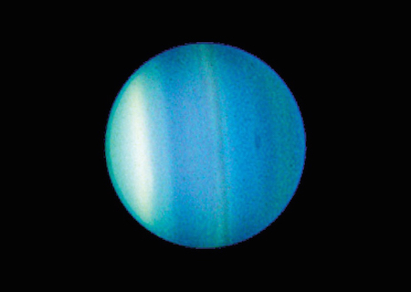

Uranus is made of water, methane, and ammonia fluids above a small rocky center. Its atmosphere is made of hydrogen and helium like Jupiter and Saturn, but it also has methane. The methane makes Uranus blue.
Uranus also has faint rings. The inner rings are narrow and dark. The outer rings are brightly colored and easier to see. Like Venus, Uranus rotates in the opposite direction as most other planets. And unlike any other planet, Uranus rotates on its side.

This picture shows Uranus surrounded by its four major rings and by 10 of its moons. This image has colors added to show the different altitudes and thicknesses of clouds in the atmosphere. Green and blue areas show where the atmosphere is clear and sunlight can get through. The yellow and grey parts have thicker clouds. Orange and red colors mean very high clouds, similar to cirrus clouds on Earth.
The Hubble Space Telescope took this picture of Uranus. You can see bands and a dark spot in Uranus' atmosphere.